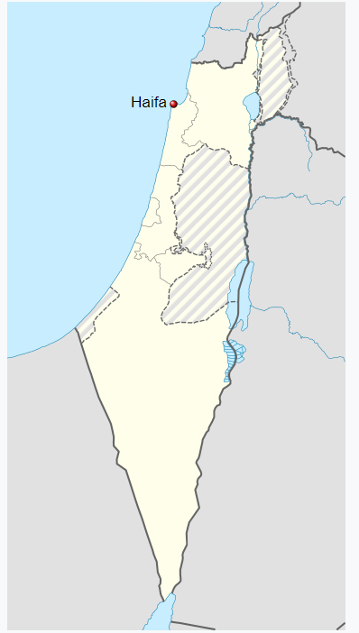

Haifa (Hebrew: חֵיפָה Ḥefa [χeˈfa]; Arabic: حيفا Ḥayfa)[2] is the third-largest city in Israel—after Jerusalem and Tel Aviv—with a population of 285,316 in 2019. The city of Haifa forms part of the Haifa metropolitan area, the second- or third-most populous metropolitan area in Israel.[3][4] It is home to the Baháʼí Faith's Baháʼí World Centre, and is a UNESCO World Heritage Site and a destination for Baháʼí pilgrimage.[5]
